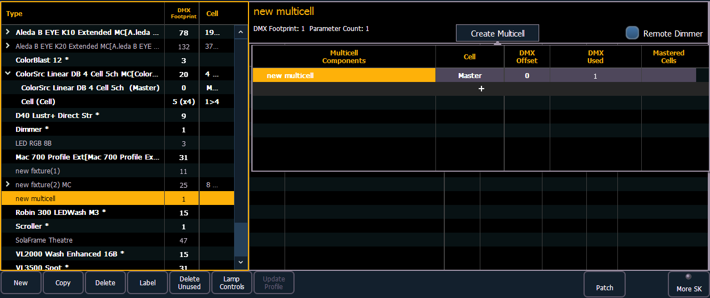
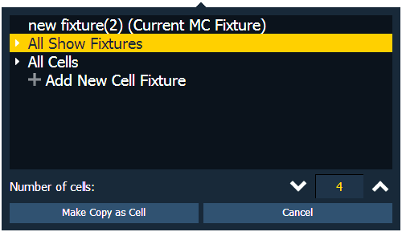

Creating Multicell Fixtures
Multicell fixtures can be created by using the fixture editor. You can either create a new fixture, or copy an existing fixture to edit.
To create a new fixture, press {New}. A new fixture will be added to the fixture list.
Naming a New Fixture
Once the new fixture appears in the list, it is recommended that you name the fixture you are about to create.
To name a fixture in the creator list:
- Use the [Page] keys, mouse, or touchscreen to select the new fixture.
- Press [Label] or tap on the new fixture. You can press [Label] twice to clear the name. The virtual keyboard will open in the CIA.
- Enter the desired name for the new fixture on the virtual (or attached alphanumeric) keyboard.
- Press [Enter]. The name will appear in the “Type” column of the fixture list.
Create Multicell
- With the new fixture selected, press {Create Multicell}.

- Press {+} to add cells. This will open a fixture list display. Only fixtures added to your fixture list will be here.

- Select a fixture, a cell profile from an existing multicell fixture, or create a new cell profile by selecting + Add New Cell Profile.
- Select the number of cells.
- Press {Ok} . When selecting a fixture, you will need to select {Make Copy as Cell} or {Convert to Cell}.
- {Make Copy as Cell} - makes a copy of the existing fixture profile and patches the copy as a cell. This will break any references to the original profile.
- {Convert to Cell} - converts to the fixture into a cell. This option will not be available for any library fixture or fixture currently patched in the show file.
- Make any changes needed to cell numbers, DMX offset, or mastered cells. These settings can be edited later by selecting the {Edit Multicell} button. See Editing Multicell Fixtures for more information.
- Press {Save Fixture} to save your changes or {Cancel Edit} to remove the changes and exit.
Note: If you need to delete a cell profile that has been accidently selected, select the cell and set the number of cells to 0.
You can now add or edit parameters as needed. See Editing Multicell Fixtures for more information.